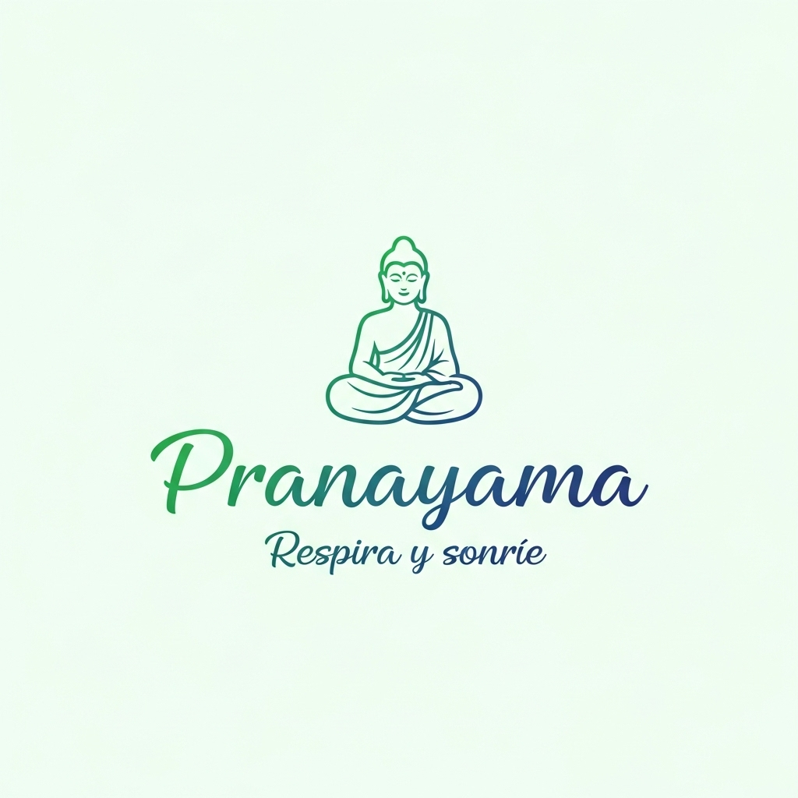

Elige tu patrón · cada respiración es un nuevo comienzo
Modo inmersivo con música
Define tus tiempos (ej: 4-7-8b)
Baja pulsaciones rápidamente
Relájate
Box Breathing (4-4-4-4)
Equilibrio total (In 5, Ex 5)
40 Hz Binaural Study Music · Scientifically Tuned for Optimal Focus
▶ Abrir en SpotifyBinaural Focus Beats · Concentration & Productivity Sounds
▶ Abrir en SpotifyCalm & Focus Lofi Beats · Para mantener la calma y el foco
▶ Abrir en SpotifyRuido marrón grave — como una cascada profunda. Tono sutil de 174 Hz para soltar tensión y entrar en concentración profunda. Ideal para bloquear el entorno y anclar la mente.
Ruido marrón + 174 HzRuido rosa equilibrado — suave y envolvente. Tono de 528 Hz, el "Mi" del ADN. Para estudiar, leer o trabajar con la mente completamente despejada.
Ruido rosa + 528 HzRuido verde — variante cálida del rosa, como lluvia suave en un bosque. Tono de 396 Hz para liberar el miedo. Para cuando necesitas serenidad sin adormecerte.
Ruido verde + 396 Hz👂 174 Hz es muy grave — con auriculares se aprecia mejor